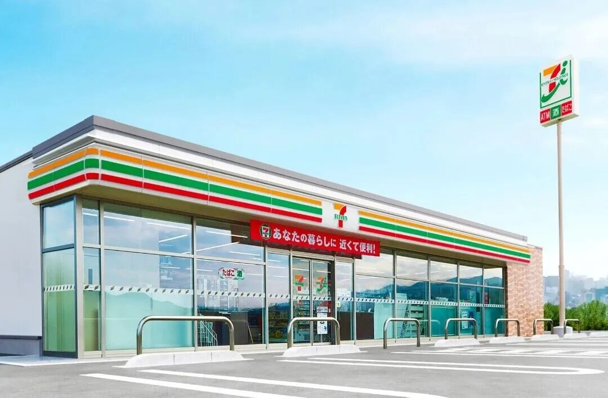
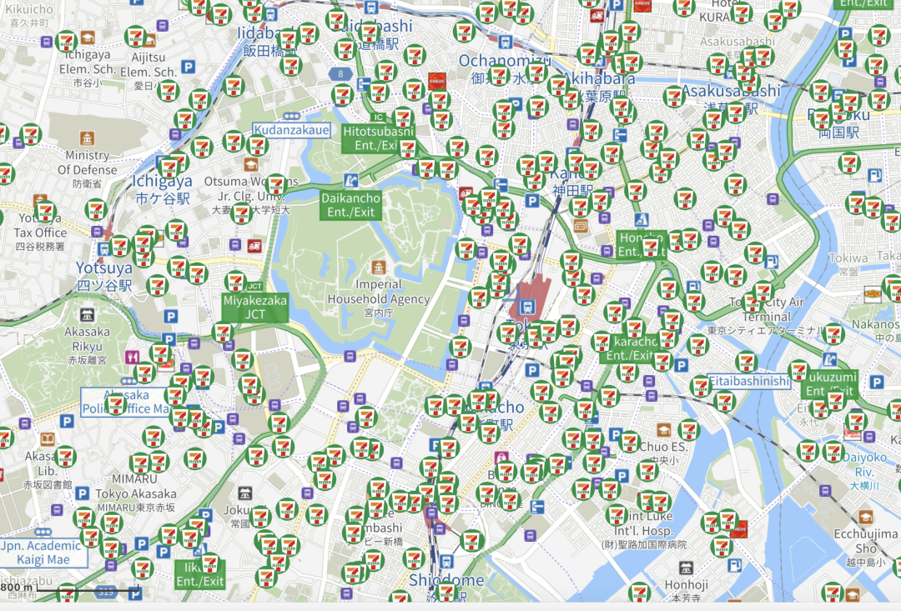

💡 零售之神，去世了
Retail God Suzuki Toshifumi 7-Eleven Founder Dies at 93
5月25日，柒和伊控股发布讣告obituary[əˈbɪtʃuəri] n. 讣告，被誉为日本“零售之神”的集团前董事长铃木敏文，因
心力衰竭于2026年5月18日逝世demise[dɪˈmaɪz] n. 逝世，终年93岁。
铃木敏文的一生，用传奇legendary[ˈledʒəndəri] adj. 传奇的一词来形容并不为过。
他曾凭借惊人的商业直觉intuition[ˌɪntjuˈɪʃn] n. 直觉将7-Eleven引入日本，成功缔造了庞大的全球零售帝国，而这一切的起点，皆源于他早年一次顶着各方反对，误打误撞的“命运转向”。
彼时，没有几个人会想到，这个没有背景、人脉和足够经济支持的“门外汉layman[ˈleɪmən] n. 门外汉”，竟改写了日本零售业的发展轨迹，乃至于留下了“世上只有两家便利店，7-Eleven便利店和其他便利店”的行业佳话。
今天，我们对铃木敏文的生平做一个回顾，表以缅怀commemorate[kəˈmeməreɪt] v. 缅怀；纪念的同时，也希望这位商业
巨擘magnate[ˈmæɡneɪt] n. 巨擘；巨头的思想、理念以及那穿越周期的经营哲学能给你带来一定的思考与启发。
来 源：正和岛（ID：zhenghedao）
必须要说的是，铃木敏文最初的志向并非是在零售业扎根，这背后，是一段“阴差阳错serendipity[ˌserənˈdɪpəti] n. 阴差阳错的机缘”的故事。
1932年，铃木敏文出生于日本长野县，1956年从中央大学经济系毕业graduate[ˈɡrædʒuət] v. 毕业后，他原本是想进入出版社当记者，但最终未能如愿。
一番辗转下，铃木敏文进入了东京出版贩卖株式会社（现今株式会社东贩），做了一段时间杂志编辑editor[ˈedɪtə] n. 编辑。不过，他内心里始终有一个念头notion[ˈnəʊʃn] n. 念头；想法：“想做点真正属于自己的、崭新的工作。”
20世纪50年代中期，电视行业在日本开始兴起emerge[iˈmɜːdʒ] v. 兴起；出现。铃木敏文嗅到了机会opportunity[ˌɒpəˈtjuːnəti] n. 机会，想成立自己的电视节目工作室。但启动资金capital[ˈkæpɪtl] n. 资金从哪来？他开始四处寻找赞助商sponsor[ˈspɒnsə] n. 赞助商。
恰在此时，一位朋友向他提起mention[ˈmenʃn] v. 提起了一家公司，叫“伊藤洋华堂”。尽管铃木敏文当时对超市几乎一无所知ignorant[ˈɪɡnərənt] adj. 一无所知的，但为了拉到赞助，他还是抱着试一试的心态去拜访了。对方则给出了一个颇具深意implication[ˌɪmplɪˈkeɪʃn] n. 深意；隐含之意的回复：“你先来我们公司，过段时间我们再提供资助。”
当时，伊藤洋华堂的规模远不如现在，旗下只有3家店，知名度reputation[ˌrepjuˈteɪʃn] n. 知名度；声誉极低。所以，当得知铃木敏文准备跳槽时，身边的朋友都强烈反对oppose[əˈpəʊz] v. 反对，“你一个搞出版的人，跑到超市行业去干什么？更何况对方只是口头verbal[ˈvɜːbl] adj. 口头的答应。”
但铃木敏文最终还是去了，当然，他也有自己的“心思”——没打算在超市长期干下来，而是将此视为获得赞助的跳板springboard[ˈsprɪŋbɔːd] n. 跳板。
当铃木敏文入职一段时间后，再去追问question[ˈkwestʃən] v. 追问；质疑那笔投资的事时，得到的答复却是“那是以后的事，你先好好工作。”原来，对方真正看中appreciate[əˈpriːʃieɪt] v. 看中；赏识的，其实是他的能力，是想让他过来帮忙做事。
怎么办呢？换做别人，发现自己被“忽悠fool[fuːl] v. 忽悠；欺骗”了，很可能选择“躺平”或者伺机而动，等待下一个机会。但铃木敏文没有，而是选择直面现实，扎下根来，亦如他的人生哲学philosophy[fəˈlɒsəfi] n. 哲学：“努力并顺其自然地坚持下来。”
当然，他所说的顺其自然，并不是一种敷衍了事perfunctory[pəˈfʌŋktəri] adj. 敷衍了事的且毫无责任感的顺其自然，而是对于偶遇之事，不会回避，认真对待，在此过程中，一点点积攒能力，一点点构筑人生的过程。
值得一提的一个细节detail[ˈdiːteɪl] n. 细节是，早年在东贩期间，铃木敏文曾被调去出版科学研究所，干的活跟出版也没什么直接关系。但正是在那里，他掌握了两个至关重要crucial[ˈkruːʃl] adj. 至关重要的的东西：数据和心理学。
数据让他练就了一双“一眼看穿细微变化”的眼睛，心理学则让他后来总能精准precise[prɪˈsaɪs] adj. 精准的把握顾客的心理。所以，在7-Eleven，他被称为“数据至上主义者”，同时又反复强调emphasize[ˈemfəsaɪz] v. 强调心理学的重要性。
20世纪70年代后，日本经济高速增长，大型超市像雨后春笋般涌现，街边的小杂货铺被冲击impact[ˈɪmpækt] n. 冲击得七零八落。整个行业的普遍共识consensus[kənˈsensəs] n. 共识是：“小”就意味着活不下去，只有“大”才有未来。
此时，铃木敏文已是伊藤洋华堂的董事，一次赴美考察inspect[ɪnˈspekt] v. 考察；视察的机会，他偶然走进了一家小店——7-Eleven。
那家店不是传统意义上的大店，但品类齐全，食品、日用品、缴费服务应有尽有comprehensive[ˌkɒmprɪˈhensɪv] adj. 全面的；应有尽有的。他当时心里一动：这不正是日本那些濒临倒闭的小店应该转型transition[trænˈzɪʃn] n. 转型的方向吗？
结果在预料anticipate[ænˈtɪsɪpeɪt] v. 预料之中，从公司内部到外部专家，几乎没有人支持他。董事会成员公开嘲讽mock[mɒk] v. 嘲讽他是“没有销售经验的门外汉”，是在做白日梦。日本市场营销学者scholar[ˈskɒlə] n. 学者和流通界人士也纷纷表态，日本不可能靠开小店立足。
他仔细分析后发现，中小零售店经营不善的根源origin[ˈɒrɪdʒɪn] n. 根源并不在于大型超市的崛起，而在于它们自身的经营方式已经落后于时代，被顾客所淘汰。小型店并非没有出路，关键是要找到与大型商店差异化differentiation[ˌdɪfəˌrenʃiˈeɪʃn] n. 差异化的经营特点。
他后来总结了一句话，今天来看依旧不过时，甚至可以作为很多决策者的座右铭motto[ˈmɒtəʊ] n. 座右铭：“我发现，众望所归的决策总是会失败，遭人非议的决策往往能成功。”
为什么？因为大多数反对者opponent[əˈpəʊnənt] n. 反对者是站在过去的延长线上看问题。他们看到的是“大型超市在崛起，小型店在倒闭bankruptcy[ˈbæŋkrʌptsi] n. 倒闭；破产”，于是理所当然地认为“大就是好，小就是不行”。
而铃木敏文看到的是未来future[ˈfjuːtʃə] n. 未来。他看到的是一幅未来的图景：随着职业人口增加、生活节奏加快，人们需要一种“随时能买到必需品necessity[nəˈsesəti] n. 必需品”的场景。小型店之所以失败，不是因为“小”，而是因为它们还在用陈旧outdated[ˌaʊtˈdeɪtɪd] adj. 陈旧的的方法经营。
想明白这一点，他开始四处游说lobby[ˈlɒbi] v. 游说，公司高层最终松了口。1973年，伊藤洋华堂拿下了7-Eleven在日本的特许经营权franchise[ˈfræntʃaɪz] n. 特许经营权，但真正的困难才刚刚开始。
由于总部对这个项目并不看好，拨给铃木敏文的资金和人手manpower[ˈmænpaʊə] n. 人手严重不足。美国方面提供的27本运营手册manual[ˈmænjuəl] n. 手册，到了日本几乎完全不适用，等于废纸一堆。
铃木敏文几近绝望despair[dɪˈspeə] n. 绝望，但仍没有放弃。他自行筹资一半，然后又招募recruit[rɪˈkruːt] v. 招募了15名完全没有经验的“门外汉”，决心将这场一开始就不被看好的冒险进行到底。
1974年5月，日本第一家7-Eleven在东京江东区开业launch[lɔːntʃ] v. 开业；启动。与此同时，他又了一个让所有人看不懂的决定：1号店不设直营，而是搞加盟affiliate[əˈfɪlieɪt] v. 加盟。
同事们纷纷表示不解，因为按常理讲，第一家店应该设为直营店，好为公司积累运营经验，但铃木敏文有自己的考量consideration[kənˌsɪdəˈreɪʃn] n. 考量。
在他看来，当时大型超市和小店铺的矛盾已经非常尖锐acute[əˈkjuːt] adj. 尖锐的；剧烈的，如果第一家是直营，无异于火上浇油。而如果让那些快要倒闭的小杂货铺变成7-Eleven的加盟店，既能缓和mitigate[ˈmɪtɪɡeɪt] v. 缓和矛盾，又能让店主们找到新的出路。
事实fact[fækt] n. 事实证明他是对的。1号店开业后，生意火爆booming[ˈbuːmɪŋ] adj. 火爆的；兴盛的，此后两年，日本7-Eleven的门店数就突破了100家。
1991年，美国南方公司（7-Eleven的母公司）因为盲目扩张expansion[ɪkˈspænʃn] n. 扩张、经营不善，濒临破产。铃木敏文选择果断出手，带着日本7-Eleven反手收购acquire[əˈkwaɪə] v. 收购；获得了美国母公司70%以上的股权，正式将这家美国公司完全的子公司化。

通过上述内容不难发现discover[dɪˈskʌvə] v. 发现，铃木敏文这一生做了做了太多别人看不懂、最后却被证明是对的事。
这背后，铃木敏文做对了什么？或者说，他凭什么敢做出在当时反主流的决策decision[dɪˈsɪʒn] n. 决策？结合其留下的著作及经营理念concept[ˈkɒnsept] n. 理念；概念，有这样3个点，或许很值得我们思考一番。
1. 把“小生意”做出“大效率efficiency[ɪˈfɪʃnsi] n. 效率”
很多人觉得开便利店没什么技术含量，无非merely[ˈmɪəli] adv. 无非；仅仅是进货卖货。但铃木敏文把这件事做到了极致ultimate[ˈʌltɪmət] adj. 极致的；最终的。
先说选址location[ləʊˈkeɪʃn] n. 选址；位置。他积极推行“密集dense[dens] adj. 密集的选址”策略，而不着急“开疆拓土”。
什么意思呢？简单来说，就是成片地开店，新店开在老店的附近，有的地方500米范围range[reɪndʒ] n. 范围内会有两三家店，但不急于进入多个城市，以至于当7-Eleven在日本的门店总数突破1.5万家时，四国、冲绳等地区仍然一家店都没有。
有人会觉得，这不是自己跟自己竞争competition[ˌkɒmpəˈtɪʃn] n. 竞争吗？如果东京开一家、大阪开一家，不就能覆盖cover[ˈkʌvə] v. 覆盖更多的城市吗？
铃木敏文并不这么想，他认为“密集选址”的好处很实在tangible[ˈtændʒəbl] adj. 实在的；切实的：

再说物流logistics[ləˈdʒɪstɪks] n. 物流。7-Eleven刚开业的时候，一家店一天来送货的车辆vehicle[ˈviːəkl] n. 车辆多达70辆。每辆车停三分钟，70辆车就是三个半小时，大半个上午全耗在卸货unload[ˌʌnˈləʊd] v. 卸货上。
为了解决这一难题，铃木敏文果断推行了“共同配送distribution[ˌdɪstrɪˈbjuːʃn] n. 配送；分销”体系——在各区域设立共同配送中心，将不同品牌、不同厂家的货物统一集中，按温度段
还有他的核心的创举initiative[ɪˈnɪʃətɪv] n. 创举；首创“单品管理”。铃木敏文把每一件商品都当成一个独立项目来管理：分析当天的天气、街区的活动、过往的销售数据，预判predict[prɪˈdɪkt] v. 预判；预测顾客的需求，然后订货，最后再通过收银系统验证。
这套“假设—执行—验证”的闭环，让7-Eleven的库存周转率turnover[ˈtɜːnəʊvə] n. 周转率远高于同行。对此，有人总结道：“7-Eleven很难看到积压backlog[ˈbæklɒɡ] n. 积压的过期食品，因为他们的计算比你的胃还要准。”
2. 不是“为了顾客”，而是“站在顾客的立场standpoint[ˈstændpɔɪnt] n. 立场上”
这句话听起来有些文字游戏的味道，但铃木敏文非常较真earnest[ˈɜːnɪst] adj. 较真的；认真的。
他说，“为了顾客”其实还是站在卖方seller[ˈselə] n. 卖方自己的立场——我想让你满意，所以我做了一堆事。而“站在顾客的立场上”，是把“我”字拿掉，真正代入顾客的角色role[rəʊl] n. 角色。
举个例子example[ɪɡˈzɑːmpl] n. 例子。7-Eleven早年做面包，为了让面包在长途运输transport[ˈtrænspɔːt] n. 运输后还能在保质期内，和厂家一起研发了长保质期的产品。研发人员还挺自豪proud[praʊd] adj. 自豪的：“你看，我为了顾客，已经尽力了。”
但铃木敏文说，你错了，顾客真正想要的，是刚出炉的、味道和新鲜度freshness[ˈfreʃnəs] n. 新鲜度都好的面包。你搞一个保质期很长的面包，那是为了方便自己，不是真正为顾客着想consider[kənˈsɪdə] v. 着想；考虑。
于是他改造revamp[ˌriːˈvæmp] v. 改造了整个生产和物流体系，把工厂建到店铺附近，根据销售高峰时间配送，推出了“刚出炉直接配送”系列面包。
这就是“站在顾客的立场上”带来的颠覆disruption[dɪsˈrʌpʃn] n. 颠覆。不是在现有能力上修修补补patch[pætʃ] v. 修补，而是回到原点，问自己：顾客到底要什么？
还有一个细节也很能说明illustrate[ˈɪləstreɪt] v. 说明；阐明问题。一次，7-Eleven推出了一款“金色拉面”，上市当天发现问题，全部回收recall[rɪˈkɔːl] v. 回收；召回。公司里有人建议：“要不发给员工当福利welfare[ˈwelfeə] n. 福利吧，反正也没坏。”
铃木敏文一口回绝refuse[rɪˈfjuːz] v. 回绝；拒绝。他说，如果让员工employee[ɪmˈplɔɪiː] n. 员工吃了本该卖给顾客的东西，他们会慢慢觉得自己和顾客“不一样”。他们会忘记自己也是一个挑剔的消费者consumer[kənˈsjuːmə] n. 消费者，再也无法用顾客的眼光去审视产品。
这指的是，当一个人在一个行业待久了，很容易被自己的经验困住，以为自己是专家expert[ˈekspɜːt] n. 专家，其实已经被惯性思维绑架了。
而“外行精神”，就是能把自己分裂成两个人，一个在局内做事，一个站在局外审视examine[ɪɡˈzæmɪn] v. 审视；检查自己：我这样做对吗？我是不是被过去的经验束缚restrict[rɪˈstrɪkt] v. 束缚；限制了？
一个细节是，铃木敏文每次给新员工做入职培训training[ˈtreɪnɪŋ] n. 培训，都会说一段让人印象深刻的话：“你们以前都是7-Eleven的顾客，肯定觉得我们有很多地方做得不好。进了公司之后，千万不要反思reflect[rɪˈflekt] v. 反思；反省‘我当年怎么那么挑剔’，请你们一直任性下去。”
因为他知道，顾客的心理有时就是任性而矛盾contradictory[ˌkɒntrəˈdɪktəri] adj. 矛盾的的。比如，顾客来到商店，发现商品已经卖光了，就会感到不满dissatisfaction[ˌdɪsˌsætɪsˈfækʃn] n. 不满，不会管你有什么理由。而如果不把自己还原restore[rɪˈstɔː] v. 还原；恢复成顾客，这些心理根本体会不了。
所以他认为，只有当员工始终保持“顾客的任性”，企业才不会自满complacent[kəmˈpleɪsnt] adj. 自满的，才不会对那些显而易见的毛病视而不见。
这也就解释了，为何他在所著《7-Eleven经营秘籍》一书中多次提到，他对于那种自诩有专业能力，就固守cling[klɪŋ] v. 固守； clinging to在自我经验里，按自我标准行事的人，非常质疑。
铃木敏文走了，终年lifespan[ˈlaɪfspæn] n. 终年；寿命93岁。
他留下了一个遍布全球的便利店帝国，也留下了一个又一个经得起时间考验的经营智慧wisdom[ˈwɪzdəm] n. 智慧。
这个曾经被嘲笑ridicule[ˈrɪdɪkjuːl] v. 嘲笑为“门外汉”的老人，几乎一生都在逆着主流走。而他则用行动action[ˈækʃn] n. 行动告诉后来者：
要知道，真正的机会，往往frequently[ˈfriːkwəntli] adv. 往往；经常藏在那些“大家都觉得不行”的地方。
往后，当你深夜走进一家7-Eleven，买到一个热腾腾的饭团，或者就是单纯simply[ˈsɪmpli] adv. 单纯地；仅仅地坐一会儿，歇歇脚，或许会想起这个名字。
他把“便利”两个字，变成了我们生活里习以为常的一部分，这大概也是这个“零售之神”最好的墓志铭epitaph[ˈepɪtɑːf] n. 墓志铭。
| 正风